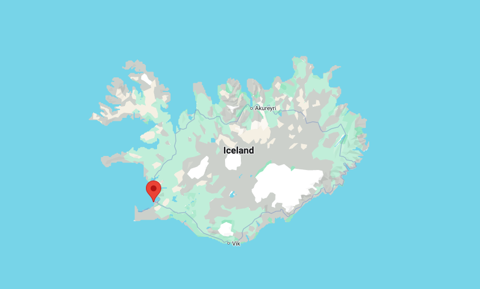

Download this dataset for the weather in Reykjavík, Iceland from January 1st to December 31st, 1990.

You can also explore windows and kernels in the smoothing lab.
Use the following code to load the dataset:
import pandas as pdimport numpy as npimport matplotlib.pyplot as pltfilename ="../archive/data/Reykjaviik1990.csv"df = pd.read_csv(filename, parse_dates=['time'], index_col='time')# convert column temperature_2m from kelvin to celsiusdf['temperature_2m'] = df['temperature_2m'] -273.15df
Make the following graphs. Click a question to reveal the steps, then open a possible solution for the code.
A line plot of the temperature in Reykjavík, Iceland from January 1st to December 31st, 1990.
Select the temperature column and plot it against the datetime index. The loading code above has already converted temperature to Celsius. The supplied file ends on December 30, so the graph stops there.
Make a smoothed temperature line on top of this, using varying window sizes.
Plot the original observations.
Calculate a rolling mean for each window width.
Plot those means on the same axes.
Here we use centered windows of 1, 7, and 30 days. A wider window suppresses short fluctuations but also rounds peaks and hides short events. With hourly observations, min_periods=24 * days requires a complete window, leaving gaps at the edges.
Make a new graph, now use rolling together with other functions. Plot the mean, min and max temperatures.
Use the same window for all three statistics. The mean describes the average temperature in the window; the minimum and maximum describe its extremes. Their separation shows the range of temperatures inside the window, not the uncertainty of the mean.
Make a graph of the precipitation accumulated in a rolling window of one week (total_precipitation). Do we use mean or sum for this? Why?
To accumulate precipitation amounts, use sum: add the amounts within each seven-day window. A mean would give the average amount per observation.
The code below uses a trailing window, so each result describes the previous seven days. It assumes each value is the amount for its sampling interval. For another rainfall product, check whether values represent interval amounts, rates, or running cumulative totals before choosing the calculation.
a possible solution
rain = df['total_precipitation']weekly_rain = rain.rolling('7D', min_periods=7*24).sum()fig, ax = plt.subplots(figsize=(11, 4))ax.plot(weekly_rain.index, weekly_rain)ax.set(xlabel='Date', ylabel='7-day precipitation total (source units)', title='Precipitation accumulated over the previous seven days')plt.show()
14.2 custom function
Write the following custom functions. Click a question to reveal the steps and code.
receives as an argument a temperature dataframe column, and returns the number of rows inside this column that are below 0 degrees.
Compare each valid temperature with zero. This produces True for freezing observations and False for the others. Summing these values counts True as 1 and False as 0.
receives as an argument a temperature dataframe column, and returns the fraction of time inside this column where temperature is below 0 degrees.
Divide the number of freezing observations by the number of valid observations. This is also an estimate of the fraction of time below freezing when observations are equally spaced, as in this hourly dataset.
Exclude missing values from the denominator. If there are no valid observations, return NaN. With irregular sampling, a fraction of rows would not necessarily be a fraction of time.
Now use your functions inside a rolling window of 30 days, with rolling('30D').apply(your_function), and plot the result. When was the fraction of freezing time the highest?
Run the two function definitions above.
Pass each function to rolling(...).apply(...).
Find the end of the window with the largest freezing fraction using idxmax().
Here we use trailing windows and require 720 hourly observations, so the first partial month cannot be mistaken for a complete 30-day result. The interval is open on the left and closed on the right: (end − 30 days, end]. If several windows tie for the maximum, idxmax() returns the first.
a possible solution
temp = df['temperature_2m']window = temp.rolling('30D', min_periods=30*24)freezing_count = window.apply(count_freezing, raw=False)freezing_fraction = window.apply(fraction_freezing, raw=False)end = freezing_fraction.idxmax()start = end - pd.Timedelta(days=30)print(f'Highest freezing fraction: {freezing_fraction.loc[end]:.1%}')print(f'Window: after {start}, up to and including {end}')fig, axes = plt.subplots(2, 1, sharex=True, figsize=(11, 6))axes[0].plot(freezing_count.index, freezing_count)axes[0].set(ylabel='Freezing observations', title='Freezing during the previous 30 days')axes[1].plot(freezing_fraction.index, freezing_fraction)axes[1].set(xlabel='Date', ylabel='Fraction below 0 °C', ylim=(0, 1))for ax in axes: ax.axvline(end, color='tab:red', linestyle='--', label='First highest-fraction window') ax.legend()plt.tight_layout()plt.show()